Source & review coverageمنبع و پوشش مرور
Main article and its embedded figures/tables reviewed. Original pages retain full equations and tables. Bibliography is source transcription; cited works were not independently reviewed.متن اصلی و شکلها و جدولهای درون آن بررسی شدهاند. معادلات و جدولهای کامل در صفحات اصلی حفظ شدهاند. کتابنامه استخراج منبع است و آثار ارجاعشده مستقلاً مرور نشدهاند.
Problem, objective and hypothesesمسئله، هدف و فرضیهها
Aghdam, Rasti, Pongracz and Anvari-Moghaddam propose an edge-based DT-HEMS to integrate forecasting and scheduling under uncertain PV, EV behavior and appliance demand. The objective is lower operating cost with technical/comfort constraints. A numbered hypothesis or research-question list is not explicitly presented.آقدام و همکاران DT-HEMS مبتنی بر لبه را برای ادغام پیشبینی و زمانبندی در عدم قطعیت خورشید، خودرو و تقاضای وسایل ارائه میکنند. هدف هزینه کمتر با قیود فنی و آسایش است. فرضیه یا پرسش شمارهگذاریشده صریح ارائه نشده است. Source · PDF p. 1Source · PDF p. 3
Methodology and implementationروش و پیادهسازی
The physical model includes PV, fixed and shiftable appliances, heat pump, stationary battery and V2G-capable EV. Eqs.1–26 specify generation, mutually exclusive charging/discharging, SOC, uninterrupted appliance cycles and thermal dynamics. Eqs.27–31 minimize grid transaction plus storage operating/degradation costs subject to energy balance.مدل شامل خورشید، بار ثابت و انتقالپذیر، پمپ حرارتی، باتری ثابت و خودروی دارای V2G است. معادلات ۱ تا ۲۶ تولید، منع شارژ/تخلیه همزمان، SOC، چرخه پیوسته وسایل و دینامیک حرارتی را تعریف میکنند. معادلات ۲۷ تا ۳۱ هزینه تبادل شبکه و کارکرد ذخیرهساز را با موازنه انرژی کمینه میکنند. Source · PDF p. 4Source · PDF p. 5Source · PDF p. 6
The DT has physical, data, analytical, virtual and communication environments. Real measurements refresh LSTM inputs/parameters to mitigate recursive forecast error. Table 2 specifies input length 24, two LSTM layers of 64 units, learning rate .001, 100 epochs, batch 32, dropout .2. Forecast targets include PV, occupancy, load and EV availability/SOC.دوقلو پنج محیط فیزیکی، داده، تحلیل، مجازی و ارتباط دارد. اندازهگیری واقعی ورودی/پارامتر LSTM را برای کاهش انباشت خطا تازه میکند. جدول ۲ طول ورودی ۲۴، دو لایه ۶۴واحدی، نرخ ۰٫۰۰۱، صد دوره، دسته ۳۲ و حذف ۰٫۲ را مشخص میکند. Source · PDF p. 6Source · PDF p. 7Source · PDF p. 8Source · PDF p. 10
Experiments and settingsآزمایش و تنظیمات
A simulated smart home is evaluated at 15-minute and one-minute scheduling resolutions over a next-24-hour optimization. Historical residential profiles train demand predictors; weather-driven generation and Nordpool day-ahead prices supply inputs. PV capacity is 4 kW, grid 10 kW, battery 10 kWh/5 kW and EV 12 kWh/3 kW; battery/EV round-trip efficiency .95. The paper does not specify a reproducible chronological train/test split or repeated seed count in the simulation section.خانه شبیهسازیشده در تفکیک ۱۵دقیقه و یکدقیقه برای افق ۲۴ ساعت ارزیابی میشود. پروفایل تاریخی مسکونی، داده هوا و قیمت روزبعد Nordpool ورودیاند. خورشید ۴کیلووات، شبکه ۱۰، باتری ۱۰کیلوواتساعت/۵کیلووات و خودرو ۱۲/۳ با بازده ۰٫۹۵ است. تقسیم زمانی بازتولیدپذیر آموزش/آزمون و شمار بذر در بخش شبیهسازی مشخص نشده است. Source · PDF p. 8Source · PDF p. 10
Compared baselinesخطمبناهای مقایسه
Forecast figures compare historical/actual behavior, conventional offline LSTM prediction and DT-refreshed prediction. Scheduling compares DT-HEMS with conventional HEMS without DT at each resolution. SVR/RF are discussed as alternatives but are not empirically benchmarked; the authors state forecasting-model comparison is outside the purpose.شکلها رفتار واقعی/تاریخی، LSTM آفلاین و پیشبینی تازهشده دوقلو را مقایسه میکنند. زمانبندی DT-HEMS با HEMS معمولی بدون دوقلو در هر تفکیک مقایسه میشود. SVR و RF جایگزینهای بحثشدهاند و آزمایش مستقیم ندارند؛ نویسندگان مقایسه مدل پیشبینی را هدف مقاله نمیدانند. Source · PDF p. 8Source · PDF p. 9Source · PDF p. 10Source · PDF p. 11
Author-stated strengths, limitations and future workقوت، محدودیت و آینده از دید نویسندگان
The authors emphasize closed-loop forecast correction, local data processing and finer-resolution scheduling. They report one-minute control requires approximately 10–15 times more computational operations per scheduling cycle, and discuss higher hardware/memory needs. Future work includes adaptive/hybrid temporal resolution and extending scenarios and practical deployment.نویسندگان اصلاح حلقهبسته پیشبینی، پردازش محلی و زمانبندی ریزتر را برجسته میکنند. تفکیک یکدقیقه حدود ۱۰ تا ۱۵ برابر عملیات محاسباتی بیشتر در هر چرخه و نیاز سختافزار/حافظه بالاتر دارد. تفکیک زمانی تطبیقی/ترکیبی و گسترش سناریوها و استقرار عملی مسیر آیندهاند. Source · PDF p. 11Source · PDF p. 12Source · PDF p. 13Source · PDF p. 14
Key reported resultsنتایج کلیدی گزارششده
DT objective €3.56 at15min and €3.31 at1min; conventional €3.93 and €3.63.هدف دوقلو در۱۵دقیقه۳٫۵۶ و دریکدقیقه۳٫۳۱یورو و معمولی۳٫۹۳ و۳٫۶۳ است. Source · PDF p. 10Source · PDF p. 11
Figures, captions & extracted evidenceشکلها، عنوانها و شواهد استخراجشده
Figure 1
Source visualتصویر منبع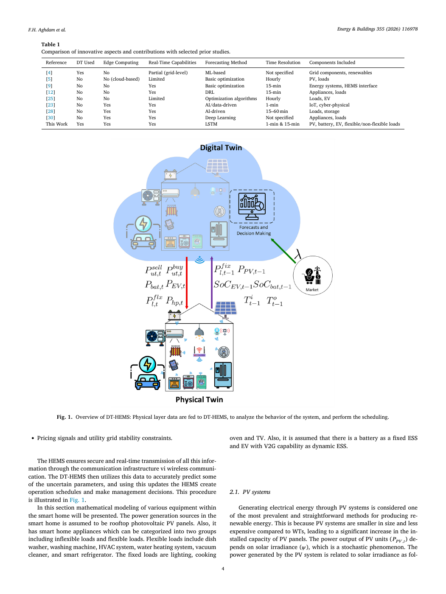
How to read this figureراهنمای خواندن شکل
Read the original labels and caption first, then use the explanation and evidence note below. Printed quantities are preserved separately from reviewer interpretation.ابتدا برچسبها و عنوان اصلی را بخوانید و سپس توضیح و یادداشت شاهد را بررسی کنید. مقدار چاپشده از تفسیر مرورگر جدا نگه داشته شده است.
Reader guidance · not an additional author claimراهنمای مطالعه · ادعای اضافی نویسنده نیستWhat this figure showsاین شکل چه نشان میدهد؟
Physical-layer measurements enter the DT; forecasts and schedules return management decisions to the home.اندازهگیری فیزیکی وارد دوقلو و پیشبینی و برنامه به تصمیم مدیریت خانه تبدیل میشوند.
Reported values & evidence limitsمقادیر گزارششده و حدود شواهد
No exact curve samples are transcribed; inspect the original figure. Unlabeled values are not estimated.نمونه دقیق منحنی ثبت نشده است؛ شکل اصلی را ببینید. مقادیر بدون برچسب تخمین زده نمیشوند.
Figure 2
Source visualتصویر منبع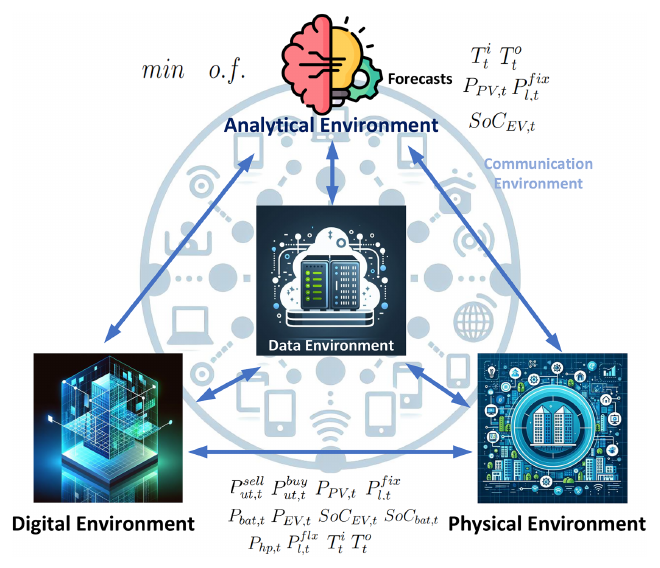
How to read this figureراهنمای خواندن شکل
Read the original labels and caption first, then use the explanation and evidence note below. Printed quantities are preserved separately from reviewer interpretation.ابتدا برچسبها و عنوان اصلی را بخوانید و سپس توضیح و یادداشت شاهد را بررسی کنید. مقدار چاپشده از تفسیر مرورگر جدا نگه داشته شده است.
Reader guidance · not an additional author claimراهنمای مطالعه · ادعای اضافی نویسنده نیستWhat this figure showsاین شکل چه نشان میدهد؟
Distinguishes the physical, data, analytical, virtual and communication environments.محیطهای فیزیکی، داده، تحلیلی، مجازی و ارتباطی را متمایز میکند.
Reported values & evidence limitsمقادیر گزارششده و حدود شواهد
No exact curve samples are transcribed; inspect the original figure. Unlabeled values are not estimated.نمونه دقیق منحنی ثبت نشده است؛ شکل اصلی را ببینید. مقادیر بدون برچسب تخمین زده نمیشوند.
Figure 3
Mechanism & workflowسازوکار و گردش کار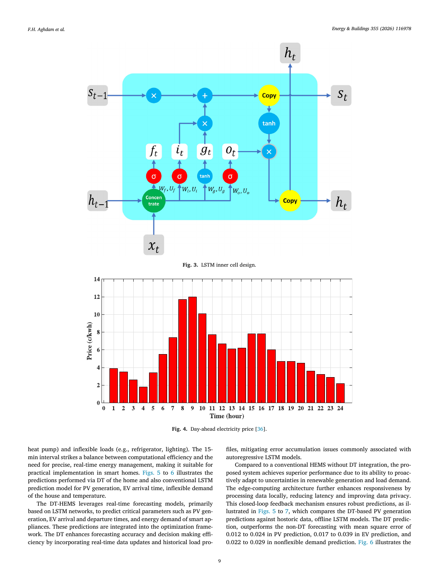
How to read this figureراهنمای خواندن شکل
Trace the inputs, processing stages and outputs, then look for feedback or validation paths. Use the accompanying explanation to distinguish the proposed design from components actually tested in the paper.ورودی، مرحله پردازش و خروجی را دنبال و مسیر بازخورد یا اعتبارسنجی را پیدا کنید. با توضیح همراه، طراحی پیشنهادی را از مؤلفه واقعاً آزمودهشده جدا کنید.
Reader guidance · not an additional author claimراهنمای مطالعه · ادعای اضافی نویسنده نیستWhat this figure showsاین شکل چه نشان میدهد؟
Input, forget and output gates implement the forecast model memory; equations32–37 provide its update rules.دروازه ورودی، فراموشی و خروجی حافظه مدل را میسازند؛ معادلات ۳۲ تا ۳۷ قواعد بهروزرسانیاند.
Reported values & evidence limitsمقادیر گزارششده و حدود شواهد
No exact curve samples are transcribed; inspect the original figure. Unlabeled values are not estimated.نمونه دقیق منحنی ثبت نشده است؛ شکل اصلی را ببینید. مقادیر بدون برچسب تخمین زده نمیشوند.
Figure 4
Source visualتصویر منبعHow to read this figureراهنمای خواندن شکل
Read the original labels and caption first, then use the explanation and evidence note below. Printed quantities are preserved separately from reviewer interpretation.ابتدا برچسبها و عنوان اصلی را بخوانید و سپس توضیح و یادداشت شاهد را بررسی کنید. مقدار چاپشده از تفسیر مرورگر جدا نگه داشته شده است.
Reader guidance · not an additional author claimراهنمای مطالعه · ادعای اضافی نویسنده نیستWhat this figure showsاین شکل چه نشان میدهد؟
Known Nordpool prices drive shifting; this price profile is an input, not a forecast result.قیمت معلوم Nordpool ورودی انتقال بار است، نه نتیجه پیشبینی.
Reported values & evidence limitsمقادیر گزارششده و حدود شواهد
No exact curve samples are transcribed; inspect the original figure. Unlabeled values are not estimated.نمونه دقیق منحنی ثبت نشده است؛ شکل اصلی را ببینید. مقادیر بدون برچسب تخمین زده نمیشوند.
Figure 5
Comparison & resultsمقایسه و نتایج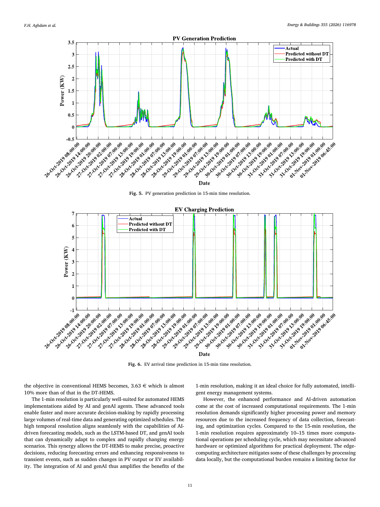
How to read this figureراهنمای خواندن شکل
Check the axes, units, panel labels and the caption’s definition of better performance. Compare methods under the stated conditions; keep uncertainty, tradeoffs and normalization separate from headline gains.محور، واحد، پنل و تعریف عملکرد بهتر در عنوان را بررسی کنید. روشها را در شرایط بیانشده مقایسه و عدمقطعیت، مصالحه و نرمالسازی را از بهبود شاخص اصلی جدا نگه دارید.
Reader guidance · not an additional author claimراهنمای مطالعه · ادعای اضافی نویسنده نیستWhat this figure showsاین شکل چه نشان میدهد؟
Compares DT-refreshed and offline forecasts against the PV trace.پیشبینی دوقلو و آفلاین با مسیر خورشید مقایسه میشود.
Reported values & evidence limitsمقادیر گزارششده و حدود شواهد
Text reports MSE .012 (DT) versus .024 (non-DT).متن MSE را ۰٫۰۱۲ برای دوقلو در برابر ۰٫۰۲۴ بدون آن گزارش میکند.
Figure 6
Time & behaviorزمان و رفتارHow to read this figureراهنمای خواندن شکل
Read the time window and units before comparing traces. Match each curve to its legend and the same operating conditions; unlabeled samples are not numerical measurements extracted by this report.پیش از مقایسه مسیرها، بازه زمان و واحدها را بخوانید. هر منحنی را به راهنما و شرایط یکسان وصل کنید؛ نمونه بدون برچسب، اندازهگیری عددی استخراجشده در این گزارش نیست.
Reader guidance · not an additional author claimراهنمای مطالعه · ادعای اضافی نویسنده نیستWhat this figure showsاین شکل چه نشان میدهد؟
EV timing/charging trace supports predicted availability and remaining SOC.مسیر زمان/شارژ خودرو از تخمین دسترسپذیری و SOC پشتیبانی میکند.
Reported values & evidence limitsمقادیر گزارششده و حدود شواهد
Text reports MSE .017 versus .039.متن MSE برابر ۰٫۰۱۷ در برابر ۰٫۰۳۹ گزارش میکند.
Figure 7
Comparison & resultsمقایسه و نتایج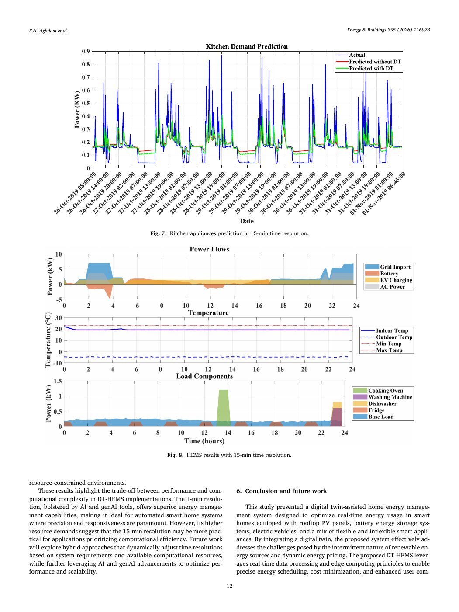
How to read this figureراهنمای خواندن شکل
Check the axes, units, panel labels and the caption’s definition of better performance. Compare methods under the stated conditions; keep uncertainty, tradeoffs and normalization separate from headline gains.محور، واحد، پنل و تعریف عملکرد بهتر در عنوان را بررسی کنید. روشها را در شرایط بیانشده مقایسه و عدمقطعیت، مصالحه و نرمالسازی را از بهبود شاخص اصلی جدا نگه دارید.
Reader guidance · not an additional author claimراهنمای مطالعه · ادعای اضافی نویسنده نیستWhat this figure showsاین شکل چه نشان میدهد؟
Shows household nonflexible-demand prediction comparison.مقایسه پیشبینی تقاضای غیرقابلانتقال خانه را نمایش میدهد.
Reported values & evidence limitsمقادیر گزارششده و حدود شواهد
Text reports MSE .022 versus .029.متن MSE برابر ۰٫۰۲۲ در برابر ۰٫۰۲۹ گزارش میکند.
Figure 8
Source visualتصویر منبعHow to read this figureراهنمای خواندن شکل
Read the original labels and caption first, then use the explanation and evidence note below. Printed quantities are preserved separately from reviewer interpretation.ابتدا برچسبها و عنوان اصلی را بخوانید و سپس توضیح و یادداشت شاهد را بررسی کنید. مقدار چاپشده از تفسیر مرورگر جدا نگه داشته شده است.
Reader guidance · not an additional author claimراهنمای مطالعه · ادعای اضافی نویسنده نیستWhat this figure showsاین شکل چه نشان میدهد؟
Schedules show grid, generation, battery/EV and load coordination under the price signal.برنامه هماهنگی شبکه، تولید، باتری/خودرو و بار تحت قیمت نشان داده میشود.
Reported values & evidence limitsمقادیر گزارششده و حدود شواهد
Reported 24-hour objective: €3.56 DT versus €3.93 conventional HEMS; authors call the reduction about 10%.هدف ۲۴ساعته ۳٫۵۶یورو برای دوقلو و ۳٫۹۳ برای معمولی است؛ نویسندگان کاهش را حدود ۱۰٪ مینامند.
Figure 9
Comparison & resultsمقایسه و نتایج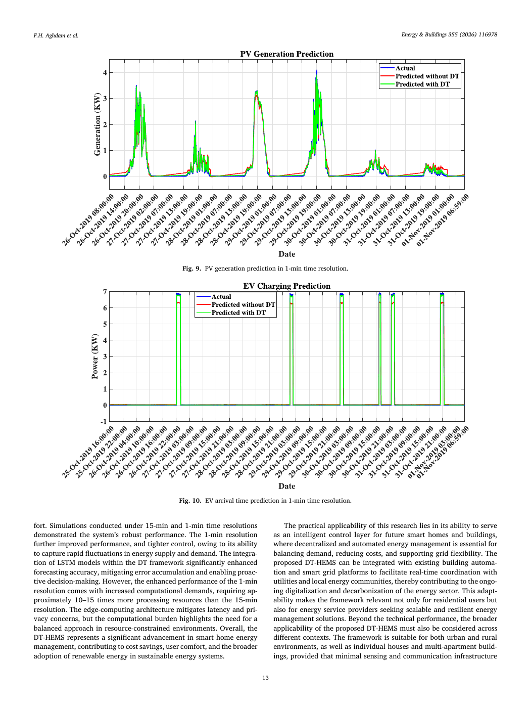
How to read this figureراهنمای خواندن شکل
Check the axes, units, panel labels and the caption’s definition of better performance. Compare methods under the stated conditions; keep uncertainty, tradeoffs and normalization separate from headline gains.محور، واحد، پنل و تعریف عملکرد بهتر در عنوان را بررسی کنید. روشها را در شرایط بیانشده مقایسه و عدمقطعیت، مصالحه و نرمالسازی را از بهبود شاخص اصلی جدا نگه دارید.
Reader guidance · not an additional author claimراهنمای مطالعه · ادعای اضافی نویسنده نیستWhat this figure showsاین شکل چه نشان میدهد؟
Fine-resolution PV comparison.مقایسه خورشید در تفکیک ریز.
Reported values & evidence limitsمقادیر گزارششده و حدود شواهد
MSE .006 versus .018.MSE برابر ۰٫۰۰۶ در برابر ۰٫۰۱۸.
Figure 10
Source visualتصویر منبعHow to read this figureراهنمای خواندن شکل
Read the original labels and caption first, then use the explanation and evidence note below. Printed quantities are preserved separately from reviewer interpretation.ابتدا برچسبها و عنوان اصلی را بخوانید و سپس توضیح و یادداشت شاهد را بررسی کنید. مقدار چاپشده از تفسیر مرورگر جدا نگه داشته شده است.
Reader guidance · not an additional author claimراهنمای مطالعه · ادعای اضافی نویسنده نیستWhat this figure showsاین شکل چه نشان میدهد؟
Fine-resolution EV availability prediction.پیشبینی دسترسپذیری خودرو در تفکیک ریز.
Reported values & evidence limitsمقادیر گزارششده و حدود شواهد
MSE .003 versus .015.MSE برابر ۰٫۰۰۳ در برابر ۰٫۰۱۵.
Figure 11
Comparison & resultsمقایسه و نتایج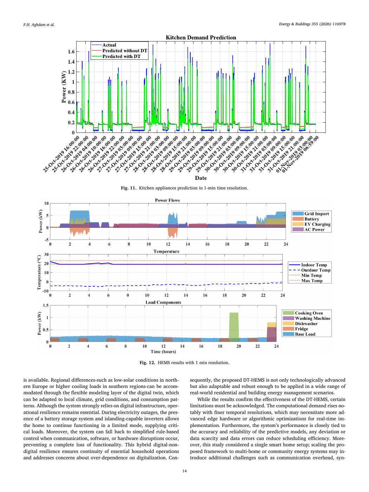
How to read this figureراهنمای خواندن شکل
Check the axes, units, panel labels and the caption’s definition of better performance. Compare methods under the stated conditions; keep uncertainty, tradeoffs and normalization separate from headline gains.محور، واحد، پنل و تعریف عملکرد بهتر در عنوان را بررسی کنید. روشها را در شرایط بیانشده مقایسه و عدمقطعیت، مصالحه و نرمالسازی را از بهبود شاخص اصلی جدا نگه دارید.
Reader guidance · not an additional author claimراهنمای مطالعه · ادعای اضافی نویسنده نیستWhat this figure showsاین شکل چه نشان میدهد؟
Fine-resolution fixed-demand comparison.مقایسه بار ثابت در تفکیک ریز.
Reported values & evidence limitsمقادیر گزارششده و حدود شواهد
MSE .005 versus .015.MSE برابر ۰٫۰۰۵ در برابر ۰٫۰۱۵.
Figure 12
Source visualتصویر منبعHow to read this figureراهنمای خواندن شکل
Read the original labels and caption first, then use the explanation and evidence note below. Printed quantities are preserved separately from reviewer interpretation.ابتدا برچسبها و عنوان اصلی را بخوانید و سپس توضیح و یادداشت شاهد را بررسی کنید. مقدار چاپشده از تفسیر مرورگر جدا نگه داشته شده است.
Reader guidance · not an additional author claimراهنمای مطالعه · ادعای اضافی نویسنده نیستWhat this figure showsاین شکل چه نشان میدهد؟
Schedules demonstrate the finer temporal coordination.برنامهها هماهنگی زمانی ریزتر را نشان میدهند.
Reported values & evidence limitsمقادیر گزارششده و حدود شواهد
Objective €3.31 DT versus €3.63 conventional; authors report about 7% below 15-minute DT objective.هدف ۳٫۳۱یورو برای دوقلو در برابر ۳٫۶۳ معمولی؛ حدود ۷٪ کمتر از دوقلوی ۱۵دقیقهای گزارش شده است.
Tables & numerical evidenceجدولها و شواهد عددی
Table 1 · Prior-work comparisonمقایسه کارهای پیشین
Compares DT, edge computing, real-time capability, forecasting, resolution and device coverage; it is a literature comparison, not a controlled experiment.دوقلو، لبه، بلادرنگی، پیشبینی، تفکیک و تجهیزات مقایسه میشوند؛ این مرور ادبیات است و آزمایش کنترلشده نیست.
Table 1 · PDF p. 4Table 2 · Home and LSTM parametersپارامتر خانه و LSTM
PV4kW; battery10kWh/5kW; EV12kWh/3kW; LSTM24-step input,2×64 units,100epochs,batch32. Table lists 19–23°C limits while §5.1 discusses20–23°C and model §2 discusses20–25°C; preserve these source differences.خورشید۴؛ باتری۱۰/۵؛ خودرو۱۲/۳؛ ورودی LSTM۲۴گام، دو لایه۶۴، صد دوره و دسته۳۲. حدود دما در جدول۱۹–۲۳، بخش۵٫۱ برابر۲۰–۲۳ و مدل۲۰–۲۵ است؛ اختلاف منبع حفظ میشود.
Table 2 · PDF p. 10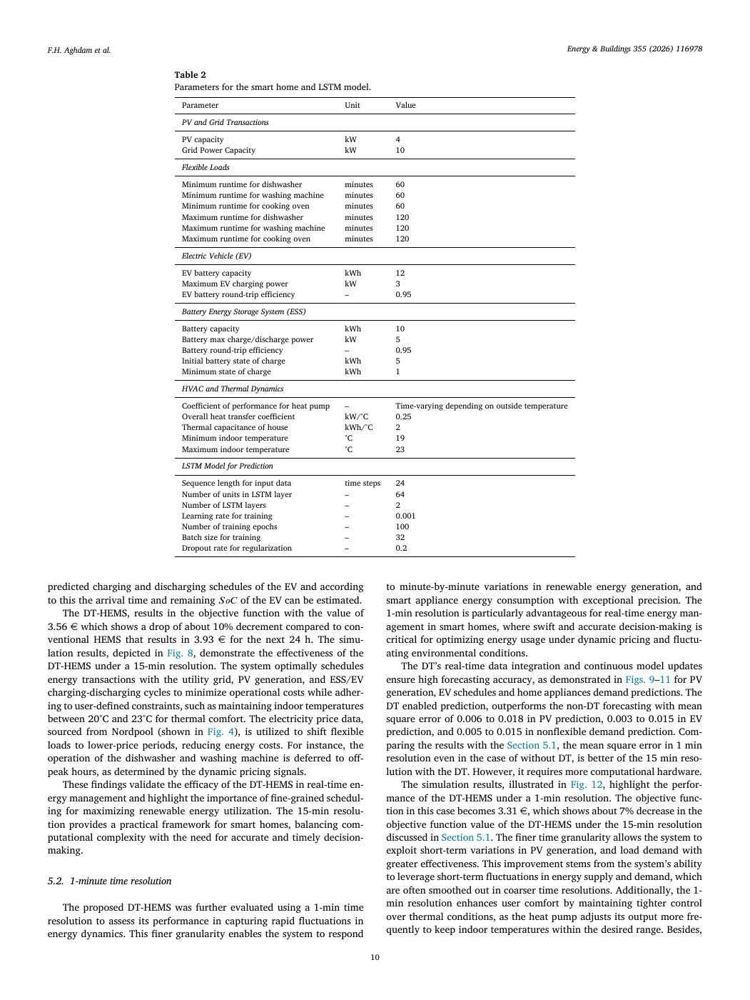
Critical analysis — reviewer assessmentتحلیل انتقادی — ارزیابی مرورگر
Reviewer observation: differing published comfort bounds and equations require unit/time-step checking before implementation. Simulation claims about edge privacy/latency should not be read as measured deployment guarantees.ملاحظه مرورگر: حدود آسایش متفاوت و معادلات پیش از پیادهسازی به بررسی واحد/گام زمانی نیاز دارند. ادعای شبیهسازی درباره حریم خصوصی/تأخیر تضمین اندازهگیریشده استقرار نیست. Source · PDF p. 6Source · PDF p. 10Source · PDF p. 11
Role in our researchنقش مقاله در پژوهش ما
Why is it important to our research?چرا برای پژوهش ما مهم است؟
Residential DT forecasting/control is established prior art directly overlapping our DT-HEMS setting.کنترل و پیشبینی دوقلوی مسکونی پیشینه مستقیم محیط پروژه ماست. Source · PDF p. 1Source · PDF p. 6
What does it contribute to our research?چه سهمی در پژوهش ما دارد؟
Provides device constraints, synchronized-forecast workflow and a time-resolution/cost tradeoff, but not five-family causal diagnosis.قیود تجهیز، گردش پیشبینی همگام و مصالحه زمان/هزینه میدهد؛ تشخیص علّی پنجخانوادهای ارائه نمیکند. Source · PDF p. 5Source · PDF p. 6Source · PDF p. 10
How can we employ it?چگونه از آن استفاده کنیم؟
Use as a specification source for battery/EV constraints and a forecast-refresh ablation. Re-express dynamics and timing for hourly Alameda rather than copy one-minute scores.برای مشخصات قیود باتری/خودرو و حذف مؤلفه تازهسازی پیشبینی استفاده شود؛ دینامیک برای Alameda ساعتی بازتعریف شود. Source · PDF p. 5Source · PDF p. 8Source · PDF p. 10
Should we implement it as a baseline?آیا باید آن را بهعنوان خطمبنا پیاده کنیم؟
Conditional adapted control/Twin baseline, not a mandatory full reproduction. Prioritize an equivalent no-refresh versus refresh controller if this isolates our contribution.خطمبنای اقتباسی مشروط کنترل/دوقلو است؛ بازتولید کامل الزام ندارد. مقایسه کنترلگر همسان با و بدون تازهسازی در صورت ارتباط اولویت دارد. Source · PDF p. 9Source · PDF p. 10Source · PDF p. 11
Original source pagesصفحات اصلی منبع
PDF page 1
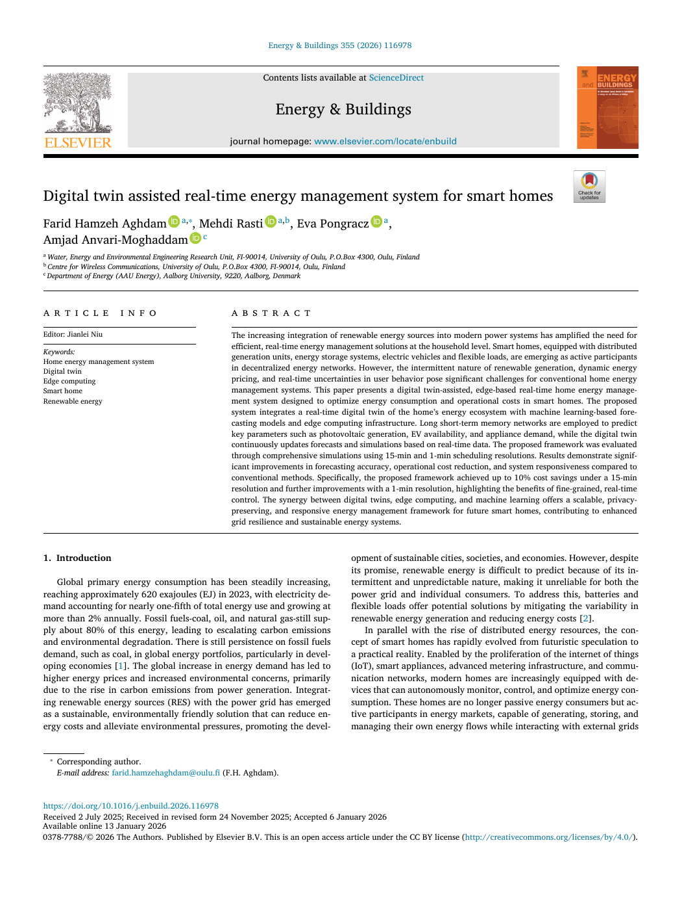
PDF page 2
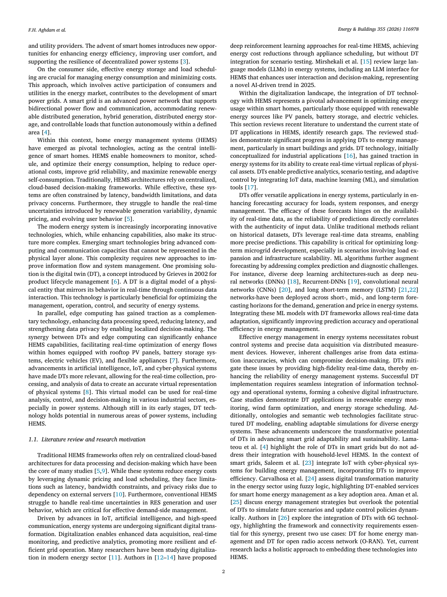
PDF page 3
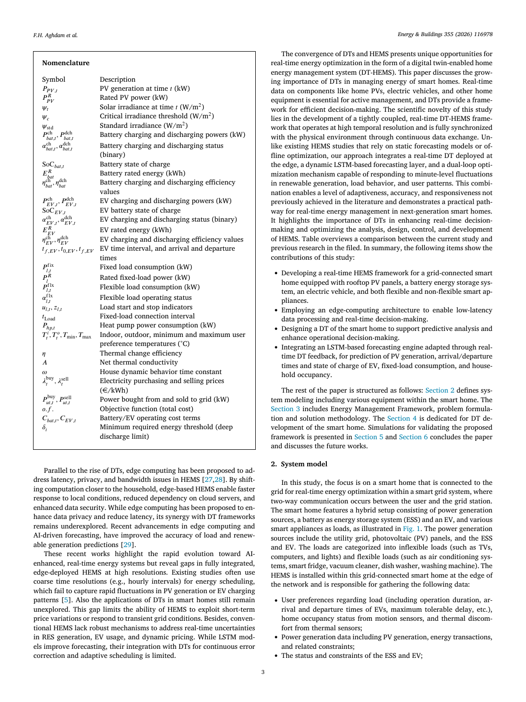
PDF page 5
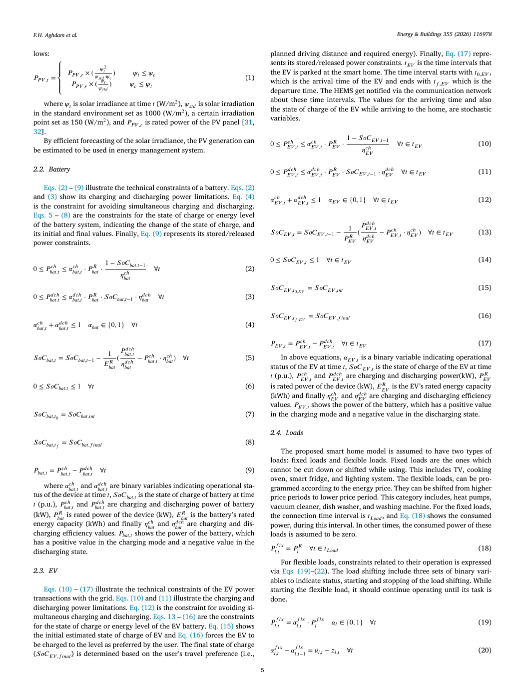
PDF page 6
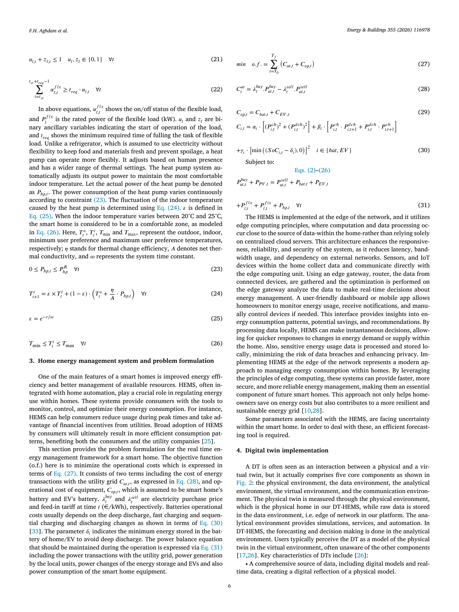
PDF page 7
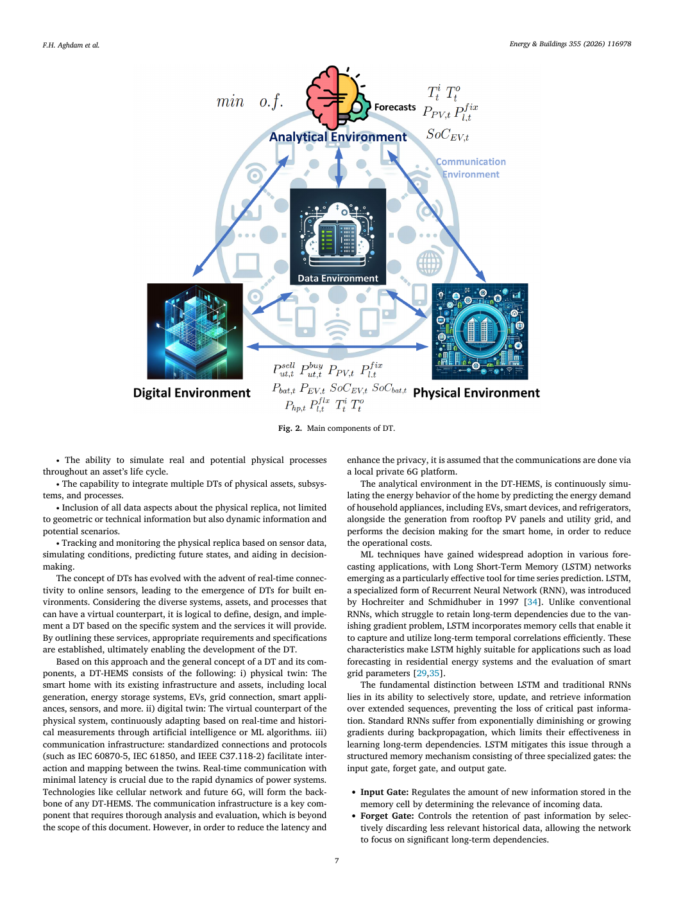
PDF page 8
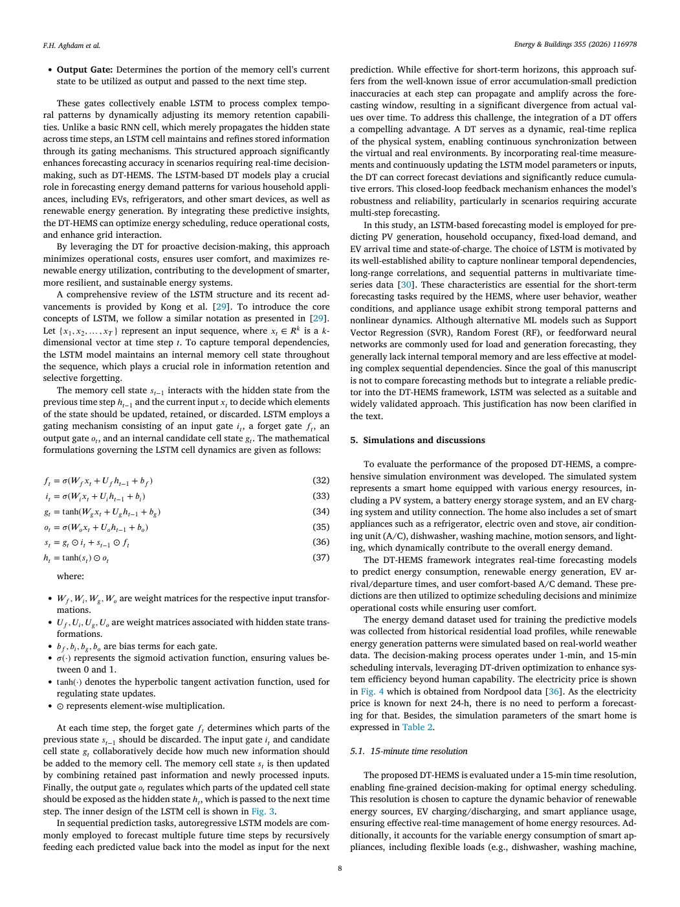
PDF page 15
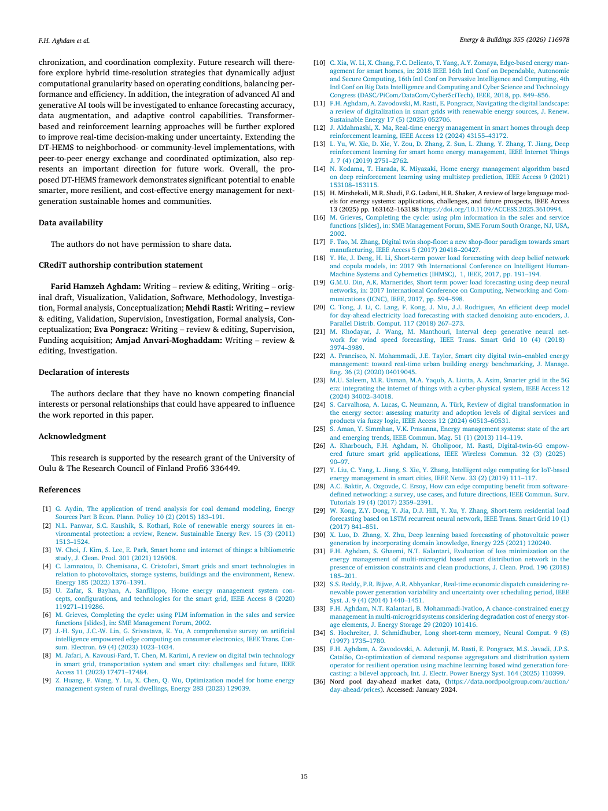
Full bibliographyکتابنامه کامل
Full bibliography transcribed from the source PDF. Original reference pages are the authority for formatting and extraction ambiguities; cited works were not independently analyzed just because they appear here.کتابنامه کامل از PDF منبع استخراج شده است. صفحه اصلی مرجع نگارش و ابهام استخراج است؛ درج منبع به معنی تحلیل مستقل آن اثر نیست.